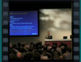
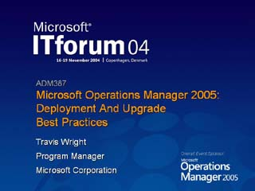

Practicing Better Than Best, Part 1 (Preconf)
Speaker(s): Steve Riley, Jesper M. Johansson
Practicing Better Than Best, Part 2 (Preconf)
Speaker(s): Steve Riley, Jesper M. Johansson
Practicing Better Than Best, Part 3 (Preconf)
Speaker(s): Steve Riley, Jesper M. Johansson
Practicing Better Than Best, Part 4 (Preconf)
Speaker(s): Steve Riley, Jesper M. Johansson
Practicing Better Than Best, Part 5 (Preconf)
Speaker(s): Steve Riley, Jesper M. Johansson
Managing Dynamic Storage Services - Lessons Learned

Speaker(s): Mark Licata
Microsoft Identity Management Strategy and Roadmap
Speaker(s): Steve Plank
In-depth Look at Client Security Enhancements in Windows XP SP 2
Speaker(s): Ryan Burkhardt
(Session 1) Holistic security and digital trust
Speaker(s): Rafal Lukawiecki
(Session 2A) Active Security Common Practices, Part 1
 Speaker(s): Rafal Lukawiecki
Speaker(s): Rafal Lukawiecki
(Session 2B) Active Security Common Practices, Part 2
Speaker(s): Rafal Lukawiecki
(Session 3A) Cryptography and PKI for Passive Security, Part 1
Speaker(s): Rafal Lukawiecki
(Session 3B) Cryptography and PKI for Passive Security, Part 2
Speaker(s): Rafal Lukawiecki
Enterprise Deployment and Configuration of Windows XP SP 2
 Speaker(s):
Speaker(s):
Microsoft Operations Manager 2005: Deployment and Upgrade Best Practices

Speaker(s): Travis Wright
What Nobody Ever Told You about Securing SQL Server
Speaker(s): Jasper M. Johannson
Group Policy Tips, Tricks and Best Practices
Speaker(s): Mark Cribben
Cryptography Overview
Speaker(s): Rafal Lukawiecki
TCP-IP for Security Administrators
Speaker(s): Steve Riley
Exchange Server 2003 Cluster Deployments Best Practices
Speaker(s): Scott Schnoll
Building High Security Networks
Speaker(s): Paul Cullimore, Graham Calladine
Live Communications Server 2005: Overview and Futures
Speaker(s): Dennis Karlinsky
Stretching Directory Boundaries: Cross-Platform Identity Management, Authentication and Security
Speaker(s): John Craddock, Sally Storey
Stretching Directory Boundaries: Cross-Platform Identity Management, Authentication and Security
Speaker(s): John Craddock, Sally Storey
Stretching Directory Boundaries: Cross-Platform Identity Management, Authentication and Security
Speaker(s): John Craddock, Sally Storey
Stretching Directory Boundaries: Cross-Platform Identity Management, Authentication and Security
Speaker(s): John Craddock, Sally Storey
Stretching Directory Boundaries: Cross-Platform Identity Management, Authentication and Security
Speaker(s): John Craddock, Sally Storey
Security for Mere Mortals
Speaker(s): Steve Lamb
Catastrophic Hardware Failure Recovery with Exchange Server 2003
Speaker(s): Eileen Brown
Windows Storage Server 2003
 Speaker(s): Justin Alderson,Mat Young
Speaker(s): Justin Alderson,Mat Young
SQL Server 2005 Overview
Speaker(s): Matthew Stephen
Storage Technology in the Windows Platform
Speaker(s): Justin Alderson,Mat Young
Microsoft Virtual Server 2005: A Technical Overview
Speaker(s): John Howard
Digital Trust - Goals and Obstacles
Speaker(s): Rafal Lukawiecki